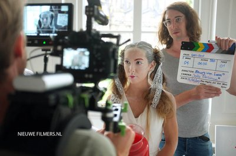
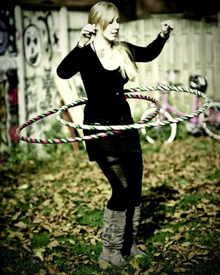
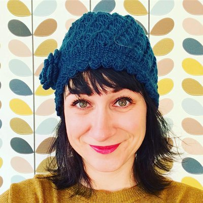
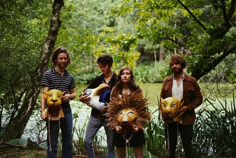
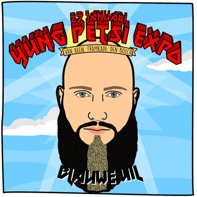
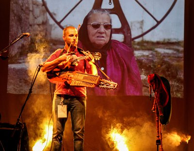
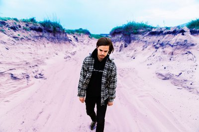
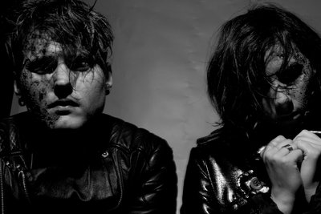

vrijdag
13:15-16:30
Art United Showcase
Art United is een trainingsprogramma voor jongeren die iets met hun talenten willen doen. Onder begeleiding van professionals krijgen zij de kans om het resultaat te laten zien op het Art United Festival op zondag 28 januari bij Muzerije. Tijdens RAUWKOST de dag ervoor, geeft Studi073 een kijkje in de keuken met een aantal deelnemers van vorig jaar.


vrijdag
13:30-16:30
Snobquiz
Gaan van radio 538 jou oren ook bloeden? Zoek jij je heil bij studio Brussel of zelfs helemaal niet op de radio? Kom dan naar de alternative popuiz van Mourad Majiti. Een goede test van je muziekkennis én bier in een de gloednieuwe bierbrouwerij op de Tramkade. Klinkt als een goed begin van je festivalbezoek!


vrijdag
14:00-04:00
A future Ski-bar
Het collectief Computery Guys beschildert alles wat los en vast zit. Je kent ze misschien van Down The Rabit Hole, De Kerk of Doornroosje. Als zij aanwezig zijn, dan is het feest! In de garage van Jong Actief ligt een hoop zooi die ze in één dag ombouwen tot een futuristische ski-bar, compleet met dj's en performances. Let's put the art in party!
vrijdag
14:00-17:00
Faqlab
Neem een kijkje in het speelse lab van Faq Festival. Het Koudijs Lokaal is omgetoverd tot een waar laboratorium vol installaties, joysticks, modulaire synthesizers, soldeerbouten en loopstations. In verschillende workshops en demonstraties leer je meer over deze instrumenten en kun je zelf aan de slag met het in elkaar solderen van je eigen elektro-kit!

vrijdag
14:00-18:00
Filmmaken on stage
Heb je altijd al eens willen weten hoe het er op een filmset aan toe gaat? Denk jij dat je thuis hoort in het filmwereldje? Wil je zelf eens in een film meespelen? SOLOS - Nieuwe Filmers gaat in de Verkadefabriek laten zien wat er allemaal aan te pas komt bij het opnemen van een film. Van de opbouw van de set tot het opnemen van de scènes en van de visagie tot de props, je kan het allemaal meemaken!

vrijdag
14:00-18:00
Hooping Sassie
Onderdeel van het dagprogramma zijn de supervette workshops hoepelen door Saskia Godwaldt. Er zullen voldoende hoepels aanwezig zijn voor tijdens de workshop. De eerste stap is dat we gaan proberen om de hoepel draaiend hoog te houden. Daarna leer je bewegen op muziek. Mocht je dit onder de knie hebben dan is er een mogelijkheid om simpele trucjes te leren. Je beweegt dus het is ook gezond, geeft ontspanning en is goed voor je spieren natuurlijk. Vind je het echt helemaal te gek? Je kunt dan ter plekke ook een hoepel aanschaffen.
vrijdag
14:00-18:00
Jamsessie
Vanaf 14:00 is er bij Stichting Jong Actief een jamsessie waar jong en oud zich bij aan mogen sluiten om hun kunsten te vertonen en in groepsverband muziek te creëren. De jamsessie wordt begeleid door Marlon van den Dungen en Daan Lemmers. Een backline is deze middag aanwezig. Op het drumstel na breng je zelf je instrument mee zoals dat bij elke andere jamsessie het geval is. Voor rappers die zin hebben om wat rijms te klappen, jullie zijn welkom om bij de jamsessie aan te sluiten. Heb je bepaalde instrumentals waar je op wil spitten, neem deze dan mee als mp3 op een usb stick.

woensdag
14:00-17:00
NJAO
Een afvaardiging van de leukste en meest enthousiaste jeugd van Nederland die accordeon speelt, zal ons aan de lange tafel in de Spiegelzaal hun wereldse kost serveren terwijl we in de rij staan voor de kassa. Het repertoire is zéér veelzijdig, van klassiek tot pop, van film muziek tot Argentijnse tango. Het orkest won vele internationale prijzen in haar reeds 20-jarig bestaan en bewijst dat het accordeon verre van oubollig is.
vrijdag
14:00-23:00
Sneeuwbal eFFect
RAUWKOST geeft je een overzicht van het activiteitenaanbod in de stad. eFFect festival is een interactief cultureel festival met sociale doelstellingen en vindt plaats in het groene landschap van jeugdzorgboerderij De Locatie op 9 + 10 juni 2018. Op het buitenterrein van de Tramkade bouwen ze een mini festival in boerderij-setting. Kom zeefdrukken, pannenkoeken bakken op een wastrommel of warm je handen bij het haardvuur van de smit.

vrijdag
14:00-15:00
Vocal Freestyle
In deze workshop bij de Jazzwerkplaats neemt Babz Verhoeven (zangcoach) je mee naar de onbegrensde mogelijkheden van je stem. Hoe zing je zacht en hoe zing je luid? Hoe kun je scheuren als een heavy metal zanger en hoe zing je meerstemmig? Een onderhoudende, vrolijke workshop voor lefbekken.
vrijdag
14:00-18:00
Workshop Rap
Rapper De Bruwelijke (Remi van Hoof), voorheen bekend als d’Blo, zal vanaf 14:00 uur een aantal rap workshops verzorgen, waar je de basis leert om een goede rap te schrijven. Aan het eind van de workshop mag je op het podium bij de jamsessie, die op dat moment ook plaatsvindt, je rap op de mic ‘spugen’. Voor hen die het rappen al onder de knie hebben en zin hebben om wat rijms te klappen, jullie zijn welkom om bij de jamsessie aan te sluiten. Heb je bepaalde instrumentals waar je op wil spitten, neem deze dan mee als mp3 op een usb stick.


vrijdag
15:30-16:30
Afrikaanse djembé
Ritme in je lijf, altijd ergens op aan het tikken en trommelen; herken je dat? Doe dan mee aan een Djembé-workshop van Martin Gort bij de Jazzwerkplaats en pik nog wat nieuws op! Martin Gort behoort tot de top van de Nederlandse percussiewereld. Hij leert je ritmes uit West Afrika, uit Cuba, weet alles van straatpercussie en haalt het beste uit jouw eigen gevoel voor cadans en dat van de groep.

vrijdag
15:30-16:15
Eerie Wanda
Eerie Wanda is het geesteskind van singer/songwriter Marina Tadic. Haar demo’s kwamen terecht bij Jasper Verhulst (voorheen in Lola Kite en Moss, nu in de band van Jacco Gardner). Hij was onder de indruk en moedigde haar aan een band te beginnen: Eerie Wanda was een feit. Begin 2016 zag het debuutalbum ‘Hum’ het licht, dat door Rolling Stone Magazine meteen tot één van de de beste popplaten van 2016 werd gebombardeerd.
vrijdag
16:15-16:45
Arvid en Marie
Afgezien van ander onderzoek zijn de geluidsvoorstellingen van Arvid & Marie de meest ontketende van hun creatieve werk. Het barmy-duo houdt ervan om zeer serieuze thema's op nogal absurde manieren te verkennen. Door middel van muziek en gesproken woord wordt geluid een materiaal voor surrealistische sferen. Niets is ooit verzekerd in hun universum van improvisatie, gevonden objecten en zelfgemaakte instrumenten.
vrijdag
17:00-18:00
De Likt
De Likt uit Rotterdam is een echte live-sensatie. Met hun brute electrorap slingeren ze de ene na de andere beuker de zaal in, of hun frontman zelf, want die houdt nogal van sky-diven. In een ouderwetse bolletjesjurk ramt hij de nummers erin, maar al gauw gaat die uit, want het wordt te heet onder die jurk. In een rood onderbroekje kun je trouwens veel beter van hot naar her springen. Het is net alsof er GoGo Gadnet-veren onder zijn schoenen zitten. Denk aan De Jeugd van Tegenwoordig maar dan maniakaal, heerlijk Rotterdams! Zonder twijfel gaat De Likt met botte tanden de Willem in Twee breken...


vrijdag
18:00-18:15
Blauwe Uil
YUNG PETSI EXPOSITIE üç∑ Een expositie, maar niet zo maar een. Niet zo maar een normale expo, nee deze is helemaal anders. Precies. Precies zoals je van Yung Petsi gewend bent. Je weet het nooit niet totdat je het meemaakt/ziet. Zo ook 27 januari met o.a. Blauwe Uil van Rotterdam Airlines.
vrijdag
18:00-21:00
Doedelzak try-out
Heb je altijd al eens op een doedelzak willen spelen? Tijdens RAUWKOST kun je in deze workshop dit vreemde instrument ontdekken, waar Omiri ook op speelt. We leren je de blaastechnieken en een melodie. We zorgen dat er doedelzakken aanwezig zijn! Speelervaring of muziekkennis is niet vereist, alleen wat enthousiasme en durf :-)
vrijdag
18:00-19:00
Nordmann
Nordmann toont de elektrische live intensiteit en het explosieve potentieel van een furieuze rock and rollband, en houdt ondertussen ook de bedachtzame en evoluerende kwaliteiten van de beste improviserende acts vast. De band uit Gent heeft net The Boiling Ground afgeleverd, een album dat leest als free jazz, Kraut, experimenteel, avant-garde en psychrock. Het is een geluid dat tot de verbeelding spreekt en suggestief is, zowel zinderend als bevredigend. Het is de zalvende drug en onmiddellijke kick voor mensen die snakken naar avontuur.

vrijdag
19:00-19:45
Omiri
Maak kennis met één van de meest frisse en originele nieuwe acts uit de muzikale onderbuik van Lissabon. Een bevreemdende, opzwepende one-man show op ukelele, bouzouki, mandoline, nyckelharpa en Portugese doedelzak. In de rug gedekt door knotsgekke visuals van bewerkte Portugese oude besjes en allerlei volksmuzikanten die haperende electro beats vormen en daarmee een brede lach op je gezicht toveren.


vrijdag
19:30-20:30
Animal Road
Animal Road is een band met haar roots in de omgeving van Den Bosch. Deze band, bestaande uit een vijftal pilshunters voorziet de avond van een mooi gevarieerd programma. Het beste samen te vatten als poprock met een rauw randje. Met hun zomerse vibes, harmonieuze samenzang, stevig gitaarwerk en up-tempo nummers maakt Animal Road samen met het publiek van ieder optreden een feest. Met het speciaalbier van de Bossche Brouwers moet dus helemaal goed komen ;-)
vrijdag
19:30-19:45
MaxiMilli
YUNG PETSI EXPOSITIE üç∑ Een expositie, maar niet zo maar een. Niet zo maar een normale expo, nee deze is helemaal anders. Precies. Precies zoals je van Yung Petsi gewend bent. Je weet het nooit niet totdat je het meemaakt/ziet. Zo ook 27 januari. MaxiMilli onderdeel van, ADF met o.a. Ronnie Flex, jaja. Deze held is aanwezig!
vrijdag
19:45-20:30
The Shady Greys
The Shady Greys is een Amsterdams duo dat vuige lo-fi blues-garage maakt, enkel gebruik makend van een cajón en voetpercussie (geen drums), bijgestaan door ruige gitaar riffs, razende vocalen en hoge dosis energie. Maatschappelijke onvrede en eenvoud zijn zowel in de studio als op het podium de norm.
vrijdag
20:00-21:00
KAUW
Deze boys uit Amsterdam maken stampende 'life music house': stampende dance muziek op analoge instrumenten! Met invloeden van het gehele muzikale spectrum en eeuwig groovende beats, is Kauw klaar voor het nachtleven. Met toetsen, bas en drums verbinden deze drie muzikanten sterke harmonieën met spacende melodieën. Juist nu de dansvloer gedomineerd wordt door DJ's zoekt Kauw naar nieuwe sounds en manieren om de analoge elektronische muziek in de clubs te krijgen! Daar werken wij natuurlijk graag aan mee :-)

vrijdag
20:30-23:15
PAPAJAHKUR
Papajahkur speelt tijdens de eerste editie van RAUWKOST Festival 2018 en heeft achtergronden in allerlei verschillende genres muziek wat zorgt voor een muzikale explosie met reggae muziek als fundering. Met roots in de rock muziek heeft Papajahkur veel ervaring met energieke live shows. Deze groep uit Den Bosch zit vol positieve energie en zorgt voor een flinke dosis 'Good vibes only!'.

vrijdag
20:40-21:25
Take No Prisoners
TAKE NO PRISONERS heeft in korte tijd een grote indruk achtergelaten bij de fans! De muziek van dit vijftal kan het best beschreven worden als melodische hardcore, met invloeden uit zowel Emo als Youth Crew Hardcore. Ieder optreden vlamt en de aandacht wordt constant opgeëist.
vrijdag
21:00-22:00
TokTek
TokTek maakt ter plekke rauwe composities van loops uit andere concerten, geluiden van speelgoed, zelfgebouwde synthesizers en joysticks! Alles wordt door hem live gesampeld, verdraaid en weer terug gesmeten om zo een structuur te creëren waarin het verwachtingspatroon geen kans krijgt. Hij geeft zijn publiek telkens opnieuw het 'you ain't seen nothing yet' gevoel.


vrijdag
22:00-23:00
Slumberland
Het project Slumberland van muzikant en filmmaker Jochem Baelus  laat zien dat muziek ook op een andere manier gemaakt kan worden. Hij bouwde hiervoor zijn eigen instrument: een gigantisch apparaat dat hij live bedient, gemaakt van haardrogers, vervormde breinaalden, blaasbalgen, potten en pannen, oude super 8 projectoren en naaimachines. Dat alles bespeelt hij in combinatie met zijn eigen zang en rauwe gitaarspel, in combinatie met elektronica en twee live drummers! Als dat geen rauwe kost is...
vrijdag
22:15-23:15
Altin Gün
Altın Gün laat zich inspireren door het Turkse geluid uit de jaren ’70. De tijd dat artiesten zoals Selda Bağcan, Barış Manço en Erkin Koray traditionele muziek samensmolten met Westerse rockinvloeden. Bandleden van Jacco Gardner en Jungle By Night waren zo gefascineerd door dit geluid, dat ze op zoek gingen naar Turkse muzikanten. Daar kwamen Merve Dasdemir en Erdinc Yildiz Ecevit om de hoek kijken. Ze spelen liedjes van de eerder genoemde kunstenaars uit de jaren ’70, maar ook minder bekende tijdgenoten. Daarnaast maken ze hun eigen versies van traditionele Turkse muziek. Zo komen verschillende werelden samen tot een verfrissend en dansbaar geluid!


vrijdag
23:00-00:00
Kampvuursessie
RAUWKOST vindt plaats op 7 verschillende binnenlocaties. Je ziet dus nooit tegelijk wie er allemaal aanwezig zijn. Daarom scharen we ons vlak voordat het feestgedruis losbarst allemaal op één moment samen rond het kampvuur, om samen de nacht in te luiden. Ondertussen kunnen ze binnen even alles ombouwen voor het nachtprogramma.
vrijdag
00:00-04:00
Adoda
Decennia lang dacht men dat alles om de aarde draaide, totdat de theorie van Copernicus stelde dat alles juist om de zon draait. Toen kwamen de jonge honden van Adoda; na jaren lang dansen, plaatjes draaien, produceren en filosoferen zagen zij een nieuw licht. Geen van bovenstaande theorieën hebben het bij het juiste eind, waar het om draait is niet belangrijk, zolang we maar kunnen dansen.

vrijdag
00:00-01:00
Dr. Meaker
In Nederland zijn er maar weinig tot geen live drum 'n bass bands te vinden. Daarvoor zijn we dus maar gaan rondneuzen in dé DnB stad van Europa: Bristol. Al gauw stuitten we daar op Dr. Meaker. Deze band is daar rete hot, wordt wekelijks gedraaid op radio 1 van de BBC en won zelfs een prijs voor Urban Music. Verwacht stampende beats met soulvolle zangeressen en koperblazers. Tijdens RAUWKOST maken ze hun debuut in Nederland met maar één boodschap: live drum 'n bass is cool!
vrijdag
00:00-04:00
PACHA MAMA SOUNDSYSTEM
Pacha Mama Soundsystem is een collectief van vier mannen die proberen alle culturele en muzikale aspecten van de soundsystem-cultuur samen te brengen in hun live-shows. Zij bouwden hun soundsystem vanaf nul in 2011 en staan sindsdien garant voor volle zalen door het hele land. Vannacht zullen zij een volledig live dubprogramma verzorgen samen met o.a. saxofonist Rootsman, zanger Strawl en een percussionist.

vrijdag
01:00-02:00
Jo Goes Hunting
Jo Goes Hunting is het geesteskind van Jimmi Jo Hueting, een bijzonder getalenteerde jonge muzikant wiens achtergrond zich uitstrekt over genres en invloeden, resulterend in een rijk geluid dat een breed palet aan instrumenten, melodieën en beats toont. De diepte en het perspectief creëren een dynamische atmosfeer die zowel warm als rauw is.

vrijdag
02:00-03:00